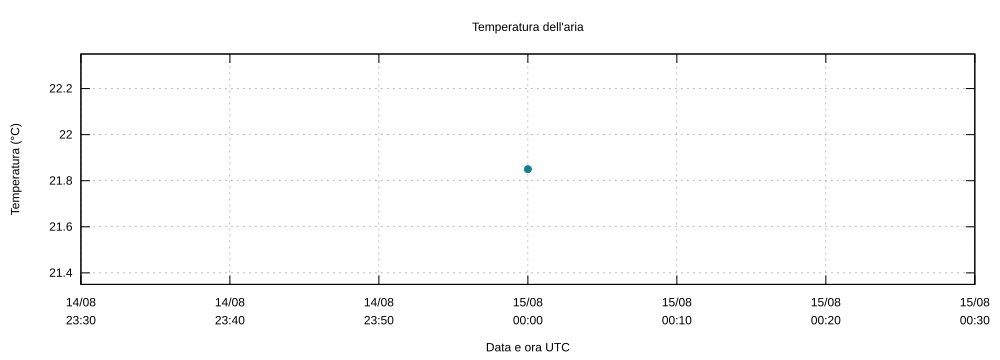

Contenuto del diario
- Osservazioni
- 2
- Serie distinte
- 2
- Prima osservazione UTC
- 2010-08-15T00:00:00Z
- Ultima osservazione UTC
- 2010-08-15T00:00:00Z
16148

16149
Osservazioni
| Data UTC | Stazione | Temperatura °C | Altezza m | Descrittore | File di origine |
|---|---|---|---|---|---|
| 2010-08-15T00:00:00Z | 16148 | 21.85 | 2.00 | B12004 | input1:synop3new.bufr |
| 2010-08-15T00:00:00Z | 16149 | 22.45 | 2.00 | B12004 | input1:synop3new.bufr |
Diagnostica dell'importazione
66 segnalazioni relative ad assunzioni o esclusioni. Le osservazioni non interpretabili non sono incluse nei grafici.
Mostra le segnalazioni
- input1:synop3new.bufr: message=0, subset=0: B04006 assente o indefinito: secondi assunti 00.
- input1:synop3new.bufr: message=1, subset=0: B04006 assente o indefinito: secondi assunti 00.
- input1:synop3new.bufr: message=2, subset=0: B04006 assente o indefinito: secondi assunti 00.
- input1:synop3new.bufr: message=3, subset=0: B04006 assente o indefinito: secondi assunti 00.
- input1:synop3new.bufr: message=4, subset=0: B04006 assente o indefinito: secondi assunti 00.
- input1:synop3new.bufr: message=5, subset=0: B04006 assente o indefinito: secondi assunti 00.
- input1:synop3new.bufr: message=6, subset=0: B04006 assente o indefinito: secondi assunti 00.
- input1:synop3new.bufr: message=7, subset=0: B04006 assente o indefinito: secondi assunti 00.
- input1:synop3new.bufr: message=8, subset=0: B04006 assente o indefinito: secondi assunti 00.
- input1:synop3new.bufr: message=9, subset=0: B04006 assente o indefinito: secondi assunti 00.
- input1:synop3new.bufr: message=10, subset=0: B04006 assente o indefinito: secondi assunti 00.
- input1:synop3new.bufr: message=11, subset=0: B04006 assente o indefinito: secondi assunti 00.
- input1:synop3new.bufr: message=12, subset=0: B04006 assente o indefinito: secondi assunti 00.
- input1:synop3new.bufr: message=13, subset=0: B04006 assente o indefinito: secondi assunti 00.
- input1:synop3new.bufr: message=14, subset=0: B04006 assente o indefinito: secondi assunti 00.
- input1:synop3new.bufr: message=15, subset=0: B04006 assente o indefinito: secondi assunti 00.
- input1:synop3new.bufr: message=16, subset=0: B04006 assente o indefinito: secondi assunti 00.
- input1:synop3new.bufr: message=17, subset=0: B04006 assente o indefinito: secondi assunti 00.
- input1:synop3new.bufr: message=18, subset=0: B04006 assente o indefinito: secondi assunti 00.
- input1:synop3new.bufr: message=19, subset=0: B04006 assente o indefinito: secondi assunti 00.
- input1:synop3new.bufr: message=20, subset=0: B04006 assente o indefinito: secondi assunti 00.
- input1:synop3new.bufr: message=21, subset=0: B04006 assente o indefinito: secondi assunti 00.
- input1:synop3new.bufr: message=22, subset=0: B04006 assente o indefinito: secondi assunti 00.
- input1:synop3new.bufr: message=23, subset=0: B04006 assente o indefinito: secondi assunti 00.
- input1:synop3new.bufr: message=24, subset=0: B04006 assente o indefinito: secondi assunti 00.
- input1:synop3new.bufr: message=25, subset=0: B04006 assente o indefinito: secondi assunti 00.
- input1:synop3new.bufr: message=26, subset=0: B04006 assente o indefinito: secondi assunti 00.
- input1:synop3new.bufr: message=27, subset=0: B04006 assente o indefinito: secondi assunti 00.
- input1:synop3new.bufr: message=28, subset=0: B04006 assente o indefinito: secondi assunti 00.
- input1:synop3new.bufr: message=29, subset=0: B04006 assente o indefinito: secondi assunti 00.
- input1:synop3new.bufr: message=30, subset=0: B04006 assente o indefinito: secondi assunti 00.
- input1:synop3new.bufr: message=31, subset=0: B04006 assente o indefinito: secondi assunti 00.
- input1:synop3new.bufr: message=32, subset=0: B04006 assente o indefinito: secondi assunti 00.
- input1:synop3new.bufr: message=33, subset=0: B04006 assente o indefinito: secondi assunti 00.
- input1:synop3new.bufr: message=34, subset=0: B04006 assente o indefinito: secondi assunti 00.
- input1:synop3new.bufr: message=35, subset=0: B04006 assente o indefinito: secondi assunti 00.
- input1:synop3new.bufr: message=36, subset=0: B04006 assente o indefinito: secondi assunti 00.
- input1:synop3new.bufr: message=37, subset=0: B04006 assente o indefinito: secondi assunti 00.
- input1:synop3new.bufr: message=38, subset=0: B04006 assente o indefinito: secondi assunti 00.
- input1:synop3new.bufr: message=39, subset=0: B04006 assente o indefinito: secondi assunti 00.
- input1:synop3new.bufr: message=40, subset=0: B04006 assente o indefinito: secondi assunti 00.
- input1:synop3new.bufr: message=41, subset=0: B04006 assente o indefinito: secondi assunti 00.
- input1:synop3new.bufr: message=42, subset=0: B04006 assente o indefinito: secondi assunti 00.
- input1:synop3new.bufr: message=43, subset=0: B04006 assente o indefinito: secondi assunti 00.
- input1:synop3new.bufr: message=44, subset=0: B04006 assente o indefinito: secondi assunti 00.
- input1:synop3new.bufr: message=45, subset=0: B04006 assente o indefinito: secondi assunti 00.
- input1:synop3new.bufr: message=46, subset=0: B04006 assente o indefinito: secondi assunti 00.
- input1:synop3new.bufr: message=47, subset=0: B04006 assente o indefinito: secondi assunti 00.
- input1:synop3new.bufr: message=48, subset=0: B04006 assente o indefinito: secondi assunti 00.
- input1:synop3new.bufr: message=49, subset=0: B04006 assente o indefinito: secondi assunti 00.
- input1:synop3new.bufr: message=50, subset=0: B04006 assente o indefinito: secondi assunti 00.
- input1:synop3new.bufr: message=51, subset=0: B04006 assente o indefinito: secondi assunti 00.
- input1:synop3new.bufr: message=52, subset=0: B04006 assente o indefinito: secondi assunti 00.
- input1:synop3new.bufr: message=53, subset=0: B04006 assente o indefinito: secondi assunti 00.
- input1:synop3new.bufr: message=54, subset=0: B04006 assente o indefinito: secondi assunti 00.
- input1:synop3new.bufr: message=55, subset=0: B04006 assente o indefinito: secondi assunti 00.
- input1:synop3new.bufr: message=56, subset=0: B04006 assente o indefinito: secondi assunti 00.
- input1:synop3new.bufr: message=57, subset=0: B04006 assente o indefinito: secondi assunti 00.
- input1:synop3new.bufr: message=58, subset=0: B04006 assente o indefinito: secondi assunti 00.
- input1:synop3new.bufr: message=59, subset=0: B04006 assente o indefinito: secondi assunti 00.
- input1:synop3new.bufr: message=60, subset=0: B04006 assente o indefinito: secondi assunti 00.
- input1:synop3new.bufr: message=61, subset=0: B04006 assente o indefinito: secondi assunti 00.
- input1:synop3new.bufr: message=62, subset=0: B04006 assente o indefinito: secondi assunti 00.
- input1:synop3new.bufr: message=63, subset=0: B04006 assente o indefinito: secondi assunti 00.
- input1:synop3new.bufr: message=64, subset=0: B04006 assente o indefinito: secondi assunti 00.
- input1:synop3new.bufr: message=65, subset=0: B04006 assente o indefinito: secondi assunti 00.